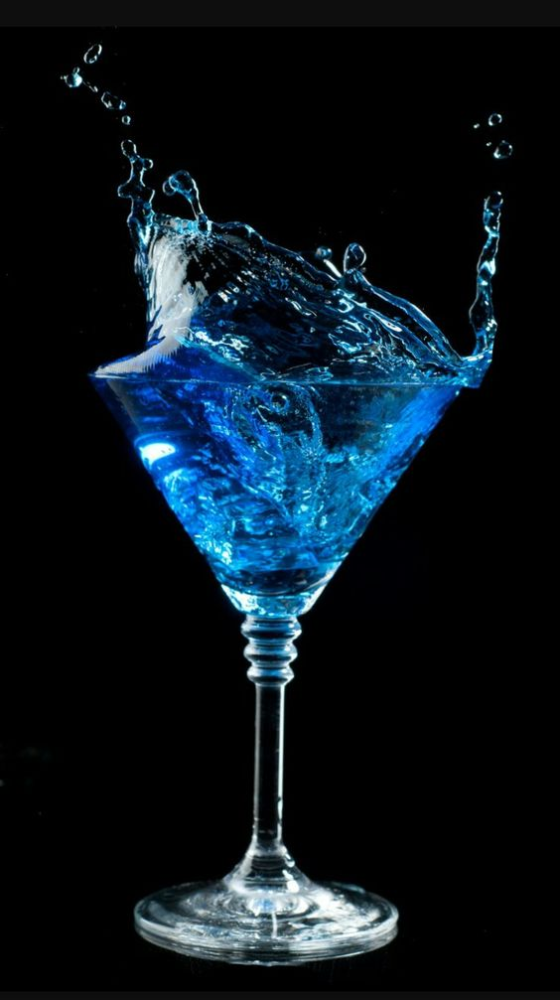

O importante é ser feliz, o resto a gente mistura com vodka.
Melhor do que tomar um drink sozinho, é tomar dois.
Sou do signo gin com ascendente em tônica.
Se a vida te der um limão, faça uma caipirinha.
E, não se esqueça, se a vida anda amargurada, tome uma boa gelada!
Quando eu era criança morria de medo de bêbado, mas hoje eu sei que a gente não faz mal para ninguém.
Depois que li sobre os males da bebida, parei de ler.
Não maltrate o bêbado, encaminhe-o para o bar mais próximo.
De hoje para trás eu parei de beber.
Claustrofobia: medo de lugares fechados. Exemplo: quando eu to indo para o bar e sinto medo de ele estar fechado.
Bar é igual Caverna do Dragão, a gente tenta sair, mas sempre acontece alguma coisa e acabamos ficando.
Chove lá fora, aqui dentro só pinga.
Mamãe mandou eu tomar juízo, uma pena porque só tinha cerveja.
</h1>

</section>
</body>
</html>
<title>